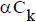
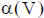
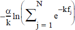
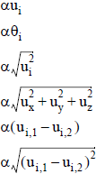

最小化或最大化目标
可以使用最小或最大设计目标来最小化或最大化以下类型的设计响应。
柔度项 |
材料体积项 |
固有频率项 |
位移项 |
|
 |
 |
 |
 |

索引 i 与 j 表示绝对坐标系或局部坐标系的轴(X、Y 或 Z)的方向。
柔度是刚度的倒数，反映的是整个模型的应变能总和。柔度和位移可基于不同载荷工况的结果。
项 α 是重量因子，在 NX 拓扑优化中始终为 1。
|
提示 |
|
优化包含多个载荷工况时，软件通过对各个值求和，将所有载荷工况的响应结合起来。各载荷工况上每个节点的结果相加，得到所有载荷工况和节点组合的一个值。